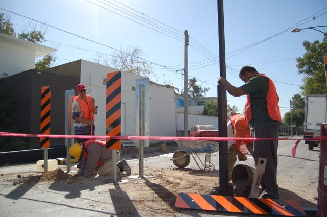
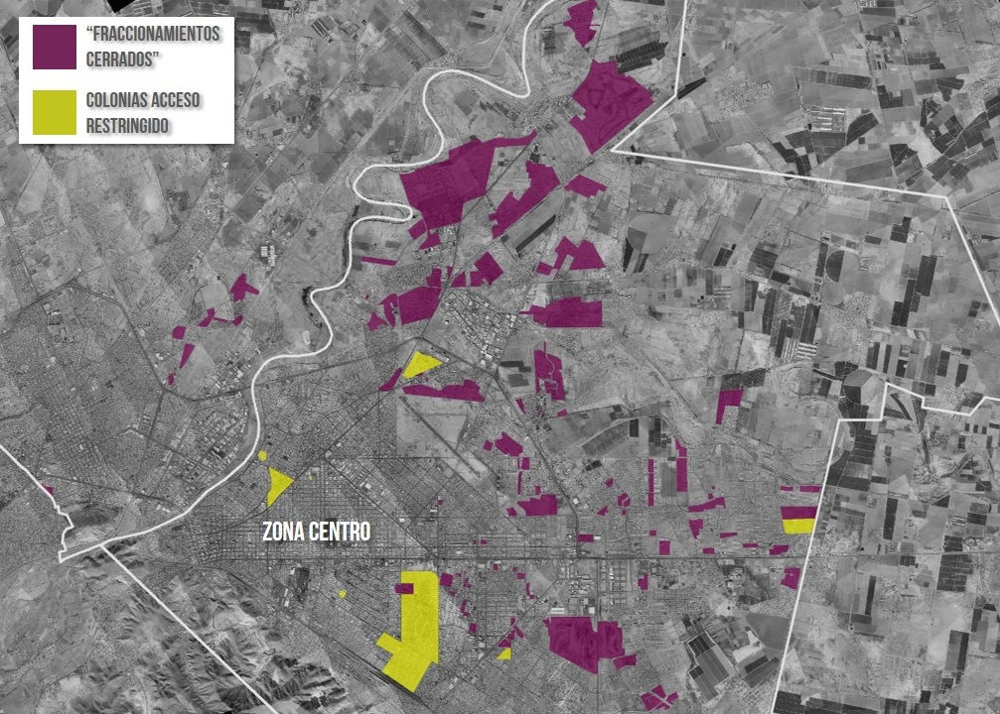

El incremento en los índices de criminalidad y violencia que se ha vivido en nuestra ciudad en la última década, así como el aumento en la percepción de inseguridad, han tenido un impacto determinante en la morfología y el desarrollo urbano reciente. La Laguna (como muchas otras ciudades) ha venido experimentando un fenómeno de fragmentación urbano consecuencia de estos procesos violentos.
La ciudadanía al sentirse amenazada por el incremento en robos, asaltos, secuestros y homicidios, ha decidido emigrar de la “ciudad abierta” hacia la periferia en desarrollos habitacionales protegidos, donde el libre tránsito tanto de personas como de vehículos es restringido parcial o totalmente. Formas urbanas a modo de fortalezas donde le muro es la principal forma de defensa ante las amenazas del crimen que se dan en el espacio público, el cual al ser lugar tanto de sociabilidad como de hostilidad(1), es privatizado controlando así las actividades que ocurren dentro de estas comunidades.
Inicialmente fueron las clases altas y medias altas las que apostaron por estos esquemas urbanos (a finales de los años ochentas, en nuestra ciudad), sin embargo en la actualidad son también los estratos medios y medios bajos los que exigen el factor “cerrado” como valor agregado a los nuevos desarrollos residenciales.
Estos “fraccionamientos cerrados” tienen cada uno características muy similares: cuentan generalmente con muro perimetral, acceso controlado ya sea mediante caseta de vigilancia o cerramientos automatizados, algunos incluso cuentan con circuito cerrado de vigilancia. Elementos que más allá de ser herramientas reales para controlar el crimen, generan un ambiente y sentimiento de seguridad, percepción de seguridad.

Por otra parte, en los últimos años se ha dado otro fenómeno de privatización y restricción del espacio urbano residencial: zonas que originalmente fueron concebidas como “abiertas”, han restringido el libre tránsito mediante elementos como muros, rejas, macetones, “plumas” o puestos de vigilancia. Ya sea por razones de inseguridad o para evitar el flujo de tráfico foráneo (no habitantes de la zona). El mensaje enviado con estas acciones es claro: “Si no perteneces a esta zona, no eres bienvenido”. Lo cual sugiere que existe una creencia generalizada de disminuir el crimen a través de la fragmentación y segregación social y urbana.
Teóricos del espacio público y prevención del delito afirman lo contrario. El arquitecto y urbanista Oscar Newmann, mediante su teoría del “Espacio Defendible” (defenisble space theory) argumenta que la seguridad de un ambiente residencial no depende tanto de su infraestructura restrictiva, sino de sus habitantes y la capacidad de apropiación de la comunidad. Afirma que un área será segura y con bajos índices delictivos mientras sus habitantes tengan un sentido de pertenencia y responsabilidad con su comunidad. Con factores fundamentales como Vigilancia Natural(2) y “ojos en la calle”(3). Lea sobre la Prevención del delito mediante la construcción del espacio público.
Podemos concluir de esta teoría, que lo que hace seguro o no a una comunidad cerrada no radica en su muralla perimetral o su vigilancia 24h, sino en la cohesión social que esta misma muralla genera en sus habitantes. El reto entonces se encuentra en generar este mismo sentido de comunidad en la “ciudad abierta”.

La fragmentación social y urbana provocada por estos desarrollos “seguros” tiene efectos que agravan la percepción de la inseguridad en la ciudad.(4) Provocan desconexión entre la ciudadanía y generan guettos residenciales donde la única comunidad creada es intramuros. Producen un marcado contraste entre estratos socioeconómicos, que pudiera resultar perjudicial al provocar un sentimiento de desconfianza y resentimiento entre distintos grupos de la población.
El escenario futuro no es alentador si se mantiene esta tendencia privatizadora. En tan sólo algunos años, la ciudad podría consistir únicamente de corredores urbanos con zonas restringidas de libre tránsito en su entorno. Algo que ya comienza a ocurrir en el norte de la ciudad.
El reto para autoridades y planeadores urbanos radica en mostrar a la ciudadanía cuales esquemas urbanos son óptimos para una mejor calidad de vida de sus habitantes. Convencer que el fraccionamiento hace justamente eso, fraccionar, y no resuelve a largo plazo los problemas de inseguridad. Implementar alternativas efectivas de prevención del delito. Para lograr esto es necesario generar políticas públicas y normativas que limiten y ordenen estos tipos de desarrollos, y promuevan e incentiven alternativas urbanas abiertas, que generen espacio público real (no privado-público) de calidad, habitable, seguro y de libre tránsito.
Referencias
- Ramirez Kuri, Patricia.“El Espacio público: ciudad y ciudadanía. De los conceptos a los problemas de la vida pública local”,2003.
- Newman, Oscar. “Design guidelines for creating defensible space”,1976.
- Jacobs, Jane. “Life and death of great american cities”, 1961.
- Guerrien, Marc. “Arquitectura de la inseguridad, percepción del crimen y fragmentación del espacio urbano en la zona metropolitana del valle de México”, 2005.